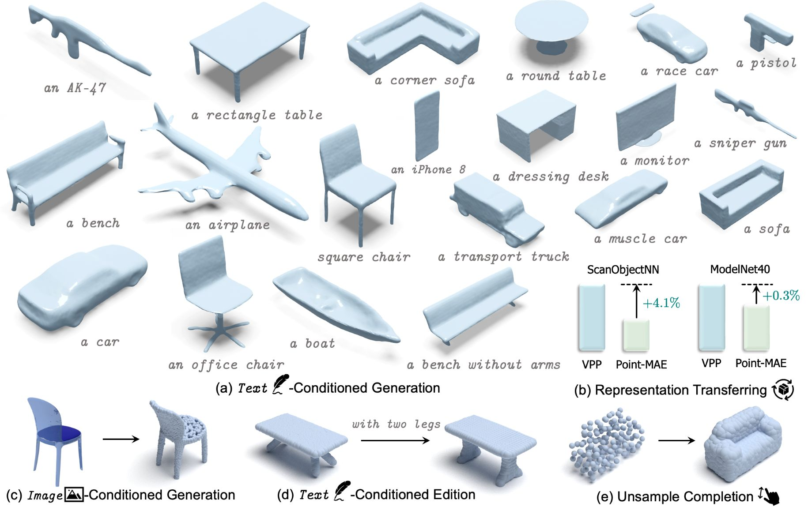
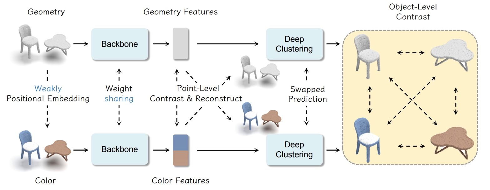
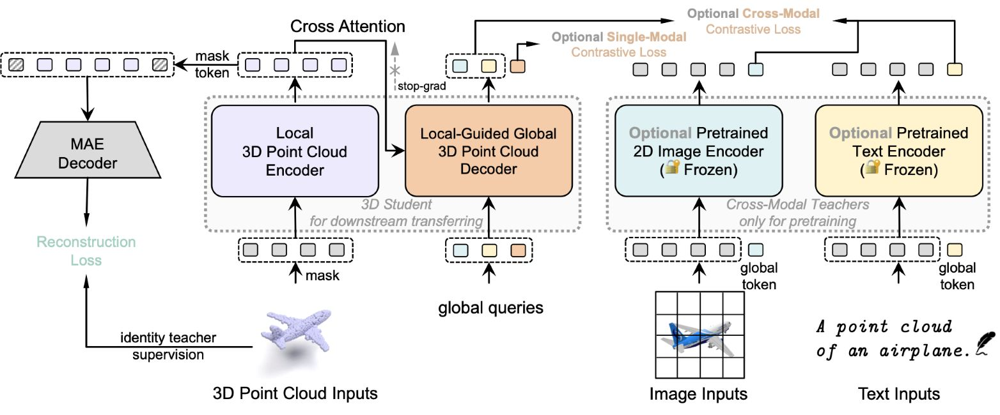
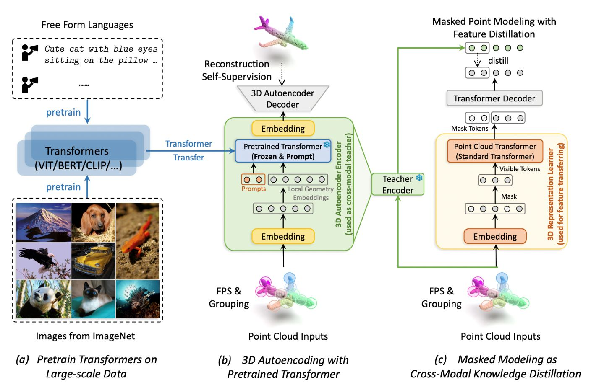

|
News
2023-04: One paper is accepted to ICML 2023.
2023-01: One paper is accepted to ICLR 2023.
|
|
Publications
* indicates equal contribution
|
|

|
VPP⚡: Efficient Conditional 3D Generation via Voxel-Point Progressive Representation
Zekun Qi*,
Muzhou Yu*,
Runpei Dong,
Kaisheng Ma
arXiv preprint, 2023
[arXiv]
[Code]
We achieve rapid, multi-category 3D conditional generation by sharing the merits of different representations. VPP can generate 3D shapes less than 0.2s using a single RTX 2080Ti.
|
|

|
Point-GCC: Universal Self-supervised 3D Scene Pre-training via Geometry-Color Contrast
Guofan Fan,
Zekun Qi,
Wenkai Shi,
Kaisheng Ma
arXiv preprint, 2023
[arXiv]
[Code]
We enhance the utilization of color information to improve 3D scene self-supervised learning.
|
|

|
Contrast with Reconstruct: Contrastive 3D Representation Learning Guided by Generative Pretraining
Zekun Qi*,
Runpei Dong*,
Guofan Fan,
Zheng Ge,
Xiangyu Zhang,
Kaisheng Ma,
Li Yi
International Conference on Machine Learning (ICML), 2023
[arXiv]
[Code]
[OpenReview]
We propose contrast guided by reconstruct to mitigate the pattern differences between two self-supervised paradigms.
|
|

|
Autoencoders as Cross-Modal Teachers: Can Pretrained 2D Image Transformers Help 3D Representation Learning?
Runpei Dong,
Zekun Qi,
Linfeng Zhang,
Junbo Zhang,
Jianjian Sun,
Zheng Ge,
Li Yi,
Kaisheng Ma
International Conference on Learning Representations (ICLR), 2023
[arXiv]
[Code]
[OpenReview]
We propose to use autoencoders as cross-modal teachers to transfer dark knowledge into 3D representation learning.
|
|
Honors and Awards
2022 Outstanding Graduate, Xi’an Jiaotong University
2021 Annual Spiritual Civilization Award , Xi’an Jiaotong University
2020 National runner-up of the China Undergraduate Physics Tournament (CUPT) as the team leader
2019 Chen Qi Scholarship, Xi’an Jiaotong University
|
|